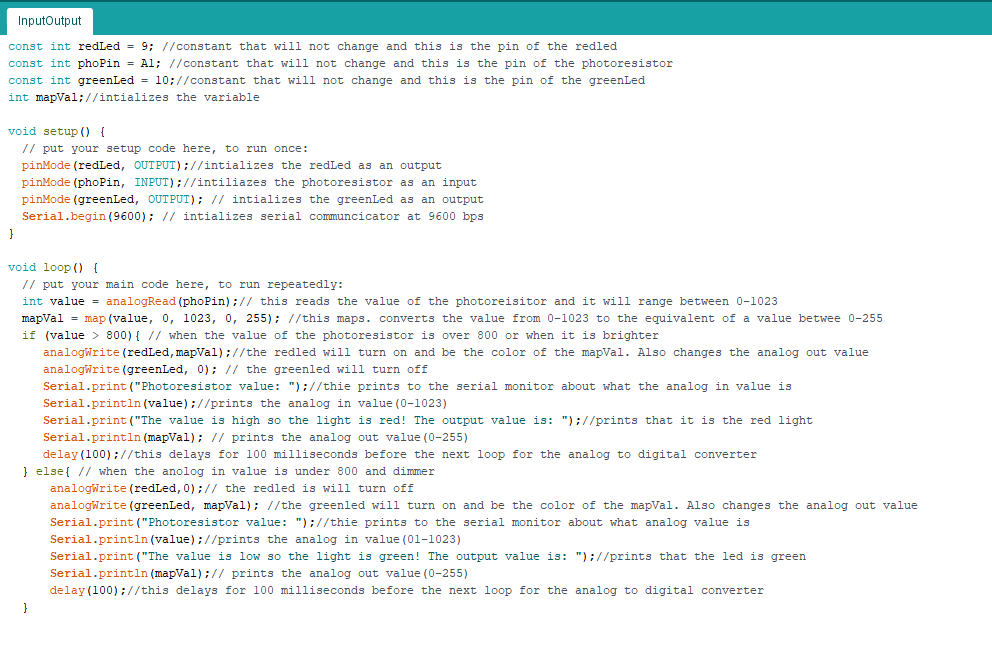

Courtney McKee's Assignment 3!
Here is all the documentation for assignment 3 which inlcudes the circuit board, schematic, a code snippet, and the circuit operation!!
Circuit
The image on the left is the breadboard which includes a redLed, greenled and a photoresistor.
On the right is the breadboard which is where the redled is connected to pin 9, the green led is connected to pin 10, and the photoresistor is connected to pin A1.
Schematic
These are the calculations for the led lights and the voltage divider. I used a 220 ohms resistor for the red and green led because it is the closest resistor to 160 ohms.
I used a 10K resistor for R2 because it could be anything over 25 ohms. A 10k resistor also insures that there will not be a short and it limits the current.
This is the schematic of the breadboard and arduino.
Code Snippet

This is the code that is making the led change due to a change in the physical world which is brightness.
I choose the value 800 for changing the brightness based on the lighting in fluke makerspace. The red led would turn on if the analogin value was greater then 800. I did this by trial and error of seeing what values worked best and looking at the serial monitor.
Cicuit Operation

This is the operation of the board. When there is more light the red led turns on and the green led turns off. The oppostie is true when there is less light.
This is the serial monitor showing the analog in and analog out values